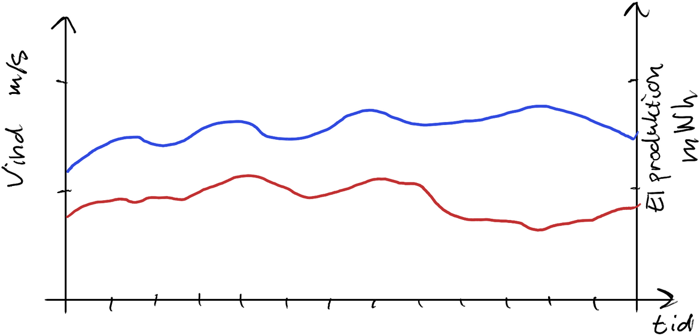
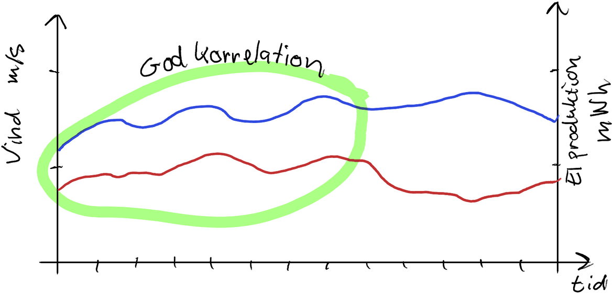
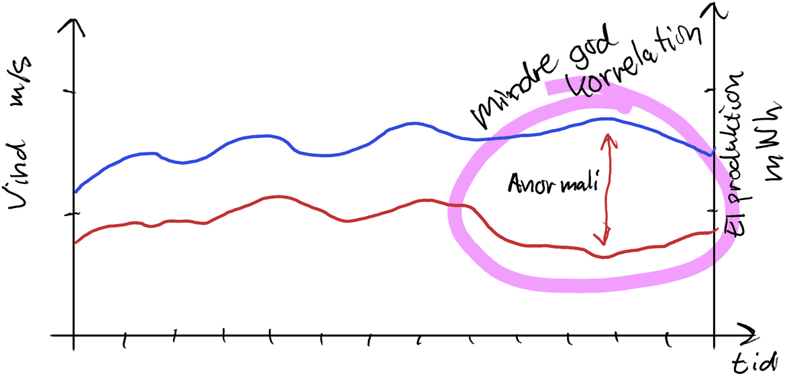

FAG Python II
Python II
Vi skal arbejde med Dataset, agregering og visualisering. No foreslår CRUD til realationsdatabaser. og paralelisering… bumbum.
Dataset
I Python er det almindeligt at håndtere dataset med en abstraction som kaldes et dataset. Dette findes i mange forskellige framworks. Den nemmeste framwork med dataframes at lære, er Pandas. Jeg har fundet et lille undervisningsforløb fra Matt Williams, University of Bristol, se https://gitlab.com/milliams/data_analysis_python.
Agregering, visualisering og explorativ analyse
Detaljerede data
Til dataanalyse har man optimalt rådighed over data som beskriver enkeltbegivenheder. Hvert salg i en butik, hver enkelt transaktion i bank, hvert registrering af måledata, hver gang en tæller aktiveret, hver gang en handling udføres. Hver enkelt af alting.
Det er den fineste detaljeringsgrad.
Sammensæt resumerede data med Agregering
Ofte vil man gerne have sammensat oplysningerne på en af flere måder. Det kaldes aggregering.
Agregeringsfunktionerne kan være tælle (count), summering (sum), gennemsnit (mean/avg), minimum/maksimum (min/max).
Det er en mulighed at anvende agreringerne globat, så der bare returneres et tal; antallet af salg i hele butikkenshistorie, indestående på alle konti i banken osv.
Det er også muligt at man ønsker agregering gruperet på data fra en anden kolonne eller felt i en post. F.eks hvor meget er derm omsat i hver filial af en butikskæde, hvor meget har hver sælger solgt for, hvor mange biler er kørt ind i anlæget, hvad er det højeste antal udlånte bøger på biblioteket, osv.
Agregering i intervaller
Man kan gruppere på unikke værdier, men også på intervaller af værdier, f.eks. borgere med intægter 0-250.000, 250.000-500.000, 500.000-1.000.000, 1.000.000 eller mere.
Agregering i intervaller i tid og dato
Intervallerne er ofte også tidsintervaller, grupperet pr. time, pr dag. pr. måned eller år.
Case: Hvornår holder vindmøllerne stille?
En Case med Data-detektiv arbejde.
Mange har oplevet at vindmøllerne kan holde stille selv om vinden blæser.
Hypoteser
Der er et par oplagte hypoteser til hvorfor dette sker:
- Møllen skal repareres
Så er det oftes en, eller et par stykker, der holder stille. Ikke hele flokken. - Det blæser for meget.
Møllerne kan ikke holde til orkan, så de lukker ned af sikkerhedshensyn. - Der er ikke afsætning eller frobrug til at afsætte strømmen.
F.eks midt om natten. - El-nettet har ikke kapacitet til at sende strømmen videre.
Det kunne have noget at gøre med eksporten…
Databaseret undersøgelse
Vi har særligt to interessante dataset tilgængelige, som måske kan forklare noget om fænomenet. Vi har data for vindhastigheder, og data for vindmølle-el-produktion.  Disse data har helt forskellige enheder, og vi kan ikke forvente at alt vden energi vinden kommer med, kan omsættes til el-produktion. Langt fra. Men der grund til at tro de er proprtionale. Og vi kan godt vise dem i samme diagram, med forskellige y-akser.
 Gennerelt må man formode at der er en god korrelation mellem disse data, da det er vinden som driver møllerne rund, og når det blæser mere, må møllerne køre mere rundt, og producere mere strøm. Omvendt, når det ikke blæser, produceres heller ingen strøm.
 Det vi er på jagt efter er hvornår opfører dataerne sig ikke-proportionalt. Er der dårligere korrelation nogen gange, end normalt. Mangler der noget. Er der en anormali.
WebScraping
- bilpriser
- nye it/tech buzzwords, fra jobopslag
CRUD / SQL DDL
Vi laver øverlser i Data Definition Language (at oprette tabeller mm), med DuckDB.
Se <SQL_DDL/duckdb.qmd> duckdb
LittleBigData
- DuckDB